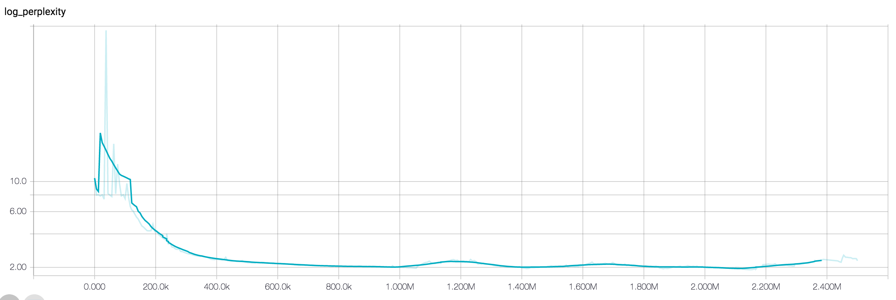
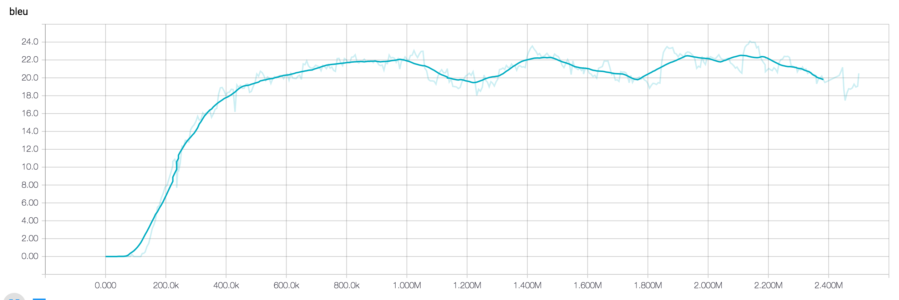

Neural Machine Translation Background
This tutorial is not meant to be a general introduction to Neural Machine Translation. We won't go into detail of how NMT systems work. For more details on the theory of Sequence-to-Sequence and Machine Translation models, we recommend the following resources:
- Neural Machine Translation and Sequence-to-sequence Models: A Tutorial (Neubig et al.)
- Neural Machine Translation by Jointly Learning to Align and Translate (Bahdanau et al.)
- Tensorflow Sequence-To-Sequence Tutorial
Preparing the data
A standard format used in both statistical and neural translation models in the parallel text format. It consists of a pair of files corresponding to source sentences and target translations, aligned line-by-bline. For example,
Sources (English):
Madam President, I should like to draw your attention to a case in which this Parliament has consistently shown an interest.
It is the case of Alexander Nikitin.
Targets (German):
Frau Präsidentin! Ich möchte Sie auf einen Fall aufmerksam machen, mit dem sich dieses Parlament immer wieder befaßt hat.
Das ist der Fall von Alexander Nikitin.
Each line corresponds to a sequence of tokens, separated by spaces. In the simplest case, the tokens are the words in the sentence. Typically, we use a tokenizer to generate to take into account word stems and punctuation. For example, common choices for tokenizers are the Moses tokenizer.perl script or libraries such a spaCy, nltk or Stanford Tokenizer.
However, learning a model based on words has a couple of drawbacks. Because NMT models output a probability distribution over words, they can became very slow with large number of possible words. If you include misspellings and derived words in your vocabulary, the number of possible words is essentially ininfite and we need to impose an artificial limit of how many N most common words we want to handle. This is also called the vocabulary size and typically set to something in the range of 10,000 to 100,000. Another drawback of training on word tokens is that the model does not learn about common "stems" of words. For example, it would consider "loved" and "loving" as completely separate classes.
One way to handle the vocabulary issue is learn subword units for a given text. For example, the word "loved" may be split up into "lov" and "ed", while "loving" would be split up into "lov" and "ing". This allows to model to generalize to new words, while also resulting in a smaller vocabulary. There are several techniques for learning such subword units, including Byte Pair Encoding (BPE), which is what we used in this tutorial. To generate a BPE for a given text, you can follow the instructions in the official subword-nmt repository:
# Clone from Github
git clone https://github.com/rsennrich/subword-nmt
cd subword-nmt
# Learn a vocabulary using 10,000 merge operations
./learn_bpe.py -s 10000 < train.tok > codes.bpe
# Apply the vocabulary to the training file
./apply_bpe.py -c codes.bpe < train.tok > train.tok.bpe
After tokenizing and apply BPE to a dataset, the original sentences may look like the following. Note that the name "Nikitin" is a rare word that has been split up into subword units delimited by @@.
Madam President , I should like to draw your attention to a case in which this Parliament has consistently shown an interest .
It is the case of Alexander Ni@@ ki@@ tin .
Frau Präsidentin ! Ich möchte Sie auf einen Fall aufmerksam machen , mit dem sich dieses Parlament immer wieder befaßt hat .
Das ist der Fall von Alexander Ni@@ ki@@ tin
Downloading the data
To make it easy to get started we have prepared an already pre-processed dataset based on the English-German WMT'16 Translation Task. To learn more about how the data was generated, you can take a look at the wmt16_en_de.sh data generation script.
After extraction, you should see the folowing files:
| Filename | Description |
|---|---|
train.tok.clean.bpe.32000.en |
The English training data, one sentence per line, processed using BPE. |
train.tok.clean.bpe.32000.de |
The German training data, one sentence per line, processed using BPE. |
vocab.bpe.32000 |
The full vocabulary used in the training data, one token per line. |
newstestXXXX.* |
Development and test data sets, in the same format as the training data. We provide both pre-processed and original data files used for evaluation. |
Alternative: Generate Toy Data
Training on real-world translation data can take a very long time. If you do not have access to a machine with a GPU but would like to play around with smaller data, you can generate a toy dataset. The following command will generate a dataset where the target sequences are reversed source sequences. That is, the model needs to learn the reverse the inputs. While this task is not very useful in practice, we can train such a model quickly and use it as as sanity-check to make sure that the end-to-end pipeline is working as intended.
DATA_TYPE=reverse ./bin/data/toy.sh
Instead of the translation data, you can use the data files generated by this script as the input to the model.
Defining the model
With the data in place, it is now time to define what type of model we would like to train. The standard choice is a Sequence-To-Sequence model with attention. This type of model has a large number of available hyperparameters, or knobs you can tune, all of which will affect training time and final performance.
We prove example configurations for small, medium, and large model. For example, the configuration for the medium-sized model look as follows:
model: AttentionSeq2Seq
model_params:
attention.class: seq2seq.decoders.attention.AttentionLayerBahdanau
attention.params:
num_units: 256
bridge.class: seq2seq.models.bridges.ZeroBridge
embedding.dim: 256
encoder.class: seq2seq.encoders.BidirectionalRNNEncoder
encoder.params:
rnn_cell:
cell_class: GRUCell
cell_params:
num_units: 256
dropout_input_keep_prob: 0.8
dropout_output_keep_prob: 1.0
num_layers: 1
decoder.class: seq2seq.decoders.AttentionDecoder
decoder.params:
rnn_cell:
cell_class: GRUCell
cell_params:
num_units: 256
dropout_input_keep_prob: 0.8
dropout_output_keep_prob: 1.0
num_layers: 2
optimizer.name: Adam
optimizer.learning_rate: 0.0001
source.max_seq_len: 50
source.reverse: false
target.max_seq_len: 50
You can write your own configuration files in YAML/JSON format, overwrite configuration values with another file, or pass them directly to the training script. We found it to be useful to save configuration files to help with reproducibility.
Training
Now that we have both a model configuration and training data we can start the actual training process. On a single modern GPU (e.g. a TitanX), training to convergence can easily take a few days, even with the small model configuration. We found that the large model configuration typically trains in 2-3 days on 8 GPUs using distributed training in Tensorflow.
# Set this to where you extracted the data
export DATA_PATH=$HOME/Downloads/wmt16_en_de
python -m bin.train \
--config_paths="./example_configs/nmt_small.yml,./example_configs/train_seq2seq.yml" \
--model_params "
vocab_source: ${DATA_PATH}/vocab.bpe.32000
vocab_target: ${DATA_PATH}/vocab.bpe.32000" \
--input_pipeline_train "
class: ParallelTextInputPipeline
params:
source_files: ['${DATA_PATH}/train.tok.clean.bpe.32000.en']
target_files: ['${DATA_PATH}/train.tok.clean.bpe.32000.de']" \
--input_pipeline_dev "
class: ParallelTextInputPipeline
params:
source_files: ['${DATA_PATH}/newstest2013.tok.bpe.32000.en']
target_files: ['${DATA_PATH}/newstest2013.tok.bpe.32000.de']" \
--batch_size 32 \
--train_steps 1000000 \
--output_dir ${TMPDIR:-/tmp}/wmt_16_en_de
Let's look at the training command in more detail and explore what each of the options mean.
- The config_paths argument allows you to pass multiple configuration files used for training. Configuration files are merged in the order they are specified, which allows you to overwrite specific values in new configuration. Here, we pass two configuration files. The file
nmt_small.ymlcontains the model type and hyperparameters (as explained in the previous section) and thetrain_seq2seq.ymlcontains common options about the training process, such as which metrics to track, and how often to sample responses. - The model_params argument allows us to overwrite model parameters. It is YAML/JSON string. Most of them are defined in the
nmt_small.ymlfile, but since the vocabulary file path depends on our data, we need to overwrite it from the command line. - The input_pipeline_train and input_pipeline_dev arguments define how to read training and development data. In our case, we use a parallel text format.
- The output_dir is the desination directory for model checkpoints and summaries.
Throughout the traning process you will see samples generated by the model, as well as the loss decreasing. To monitor the training process, you can start Tensorboard pointing to the output directory:
tensorboard --logdir ${TMPDIR:-/tmp}/wmt_16_en_de
 
Making predictions
Once your model is trained, you can start predictions, i.e. translating new data from German to English. For example:
mkdir -p ${DATA_PATH}/pred
python -m bin.infer \
--tasks "
- class: DecodeText" \
--model_dir ${TMPDIR:-/tmp}/wmt_16_en_de \
--input_pipeline "
class: ParallelTextInputPipeline
params:
source_files: ['${DATA_PATH}/newstest2014.tok.bpe.32000.en']" \
> ${DATA_PATH}/pred/newstest2014.pred.de
Let's take a closer look at this command again:
- The tasks argument specifies which inference tasks to run. It is a YAML/JSON string, containing a list of class names and optional parameters. In our command, we only execute the
DecodeTexttask, which takes the model predictions and prints them to stdout. Other possible tasks includeDumpAttentionorDumpBeams, which can be used to write debugging information about what your model is doing. - The model_dir argument points to the path containing the model checkpoints. It is the same as the
output_dirpassed during training. - input_pipeline defined how we read data and is of the same format as the input pipeline definition used during training.
Decoding with Beam Search
Beam Search is a commonly used decoding technique that improves translation performance. Instead of decoding the most probable word in a greedy fashion, beam search keeps several hypotheses, or "beams", in memory and chooses the best one based on the final joint probability. To enable beam search decoding, you can overwrite the appropriate model parameter when running inference. Note that decoding with beam search will take significantly longer.
python -m bin.infer \
--tasks "
- class: DecodeText
- class: DumpBeams
params:
file: ${TMPDIR:-/tmp}/wmt_16_en_de/newstest2014.pred.beams.npz" \
--model_dir ${TMPDIR:-/tmp}/wmt_16_en_de \
--model_params "
inference.beam_search.beam_width: 5" \
--input_pipeline "
class: ParallelTextInputPipeline
params:
source_files: ['${DATA_PATH}/newstest2014.tok.bpe.32000.en']" \
> ${DATA_PATH}/pred/newstest2014.pred.de
The above command also demonstrates how to pass several tasks to the inference script. In our case, we also dump beam search debugging information to a file on desk, so that we can inspect them later.
Evaluating using BLEU
Now that you have generated predictions and written them to ${DATA_PATH}/pred, you can evaluate your translations against reference translations using BLEU scores:
./bin/tools/multi-bleu.perl ${DATA_PATH}/pred/newstest2014.tok.en < ${DATA_PATH}/pred/newstest2014.pred.de